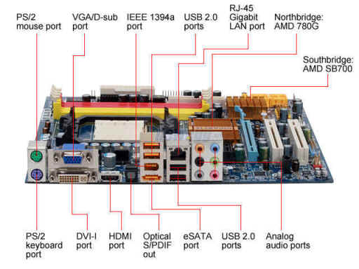

Motherboard

Finally, it’s time to talk about the motherboard. The motherboard serves as the “main hub” of the PC, all the components I previously talked about (CPU, RAM, GPU, and Storage) connect to the motherboard. They all route back to the motherboard where power is then distributed appropriately. By connecting everything, it allows the CPU to be able to control everything.
Another important aspect of the motherboard is its ports. Every major port needed for computers is found on the computer, including usb, usb-c, audio, mic, and more. HDMI is not on the motherboard, that is found on the GPU.
Click the next page button to learn about the PSU!